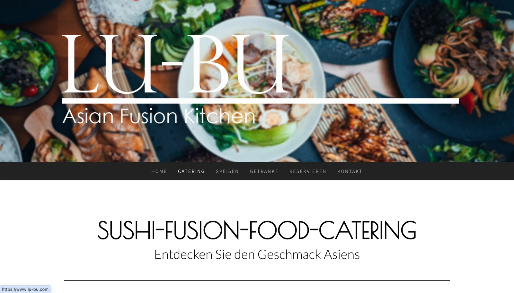

LU-BU Asian Food
LU-BU Asian Food
Platz 1 bei Google.
Eine Catering-Landingpage plus laufende Suchmaschinenoptimierung – Ergebnis: Platz 1 der unbezahlten Google-Ergebnisse für „Sushi Catering Nürnberg“.

- Branche
- Gastronomie & Catering
- Leistung
- SEO & Webentwicklung
- Ergebnis
- Platz 1 (unbezahlt)
Das Problem: das Catering war online unsichtbar
Für „Sushi Catering Nürnberg“ in den unbezahlten Ergebnissen, also ohne laufende Werbekosten.
LU-BU Asian Food bietet neben dem Restaurant im Herzen Nürnbergs auch Sushi-Catering an.
Wer online nach Sushi-Catering suchte, fand die Konkurrenz. Das eigene Angebot war praktisch unsichtbar.
So hat sich die Sichtbarkeit verändert
Was Interessenten vorher fanden und was sie heute finden.
-
Bei Google gefunden werden
VorherBei der Suche nach Sushi-Catering tauchte LU-BU kaum auf.
HeutePlatz 1 der unbezahlten Ergebnisse für „Sushi Catering Nürnberg“.
-
Das Catering-Angebot verstehen
VorherEs gab keine eigene Seite für das Catering.
HeuteEine eigene Catering-Seite im Stil des bestehenden Auftritts.
-
Die richtigen Suchbegriffe treffen
VorherDie Inhalte waren nicht auf die Suche der Kunden ausgerichtet.
HeuteDie Texte sind gemeinsam erarbeitet und auf die echten Suchbegriffe optimiert.
-
Die Position halten
VorherOhne Betreuung bleibt Sichtbarkeit dem Zufall überlassen.
HeuteLaufende SEO-Betreuung nach dem Livegang.
Was der Kunde davon hat
- Zuerst bei LU-BU
Wer in der Region nach Sushi-Catering sucht, landet zuerst bei LU-BU statt bei der Konkurrenz.
- Ohne Werbekosten
Die Platzierung ist unbezahlt. Für die Besucher fallen keine Klickkosten an.
- Ein klarer Einstieg
Interessenten finden das Catering-Angebot auf einer eigenen Seite.
Dein Projekt könnte das nächste sein.
Erzähl uns von deiner Idee. Im kostenlosen Erstgespräch klären wir, was sich für dein Team verbessern lässt.